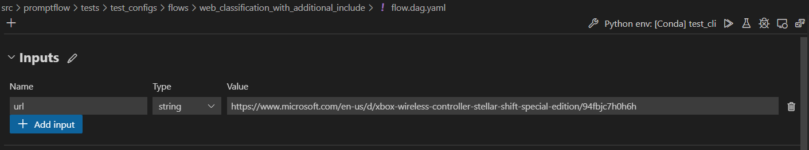
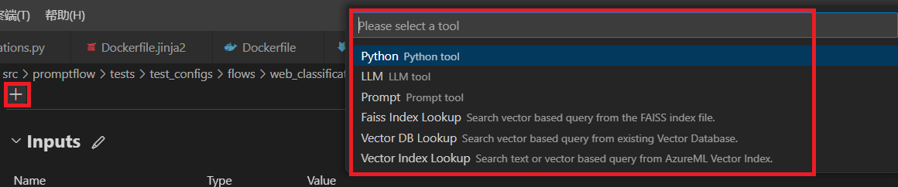
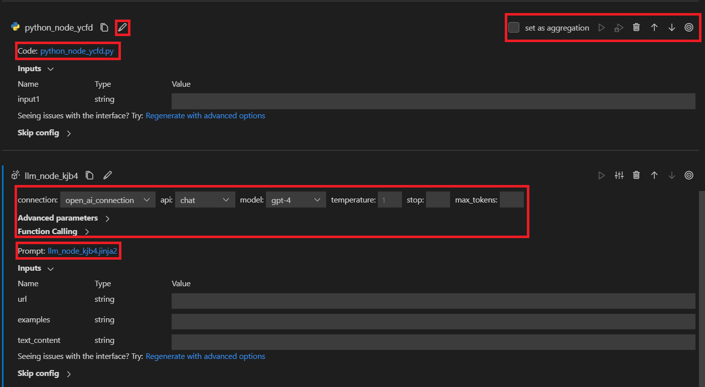
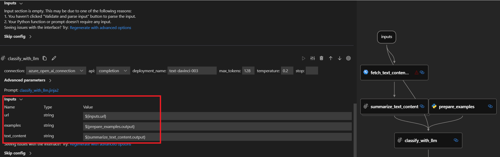
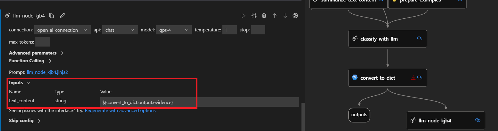
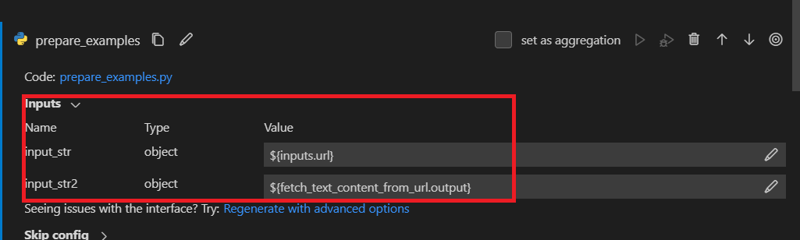
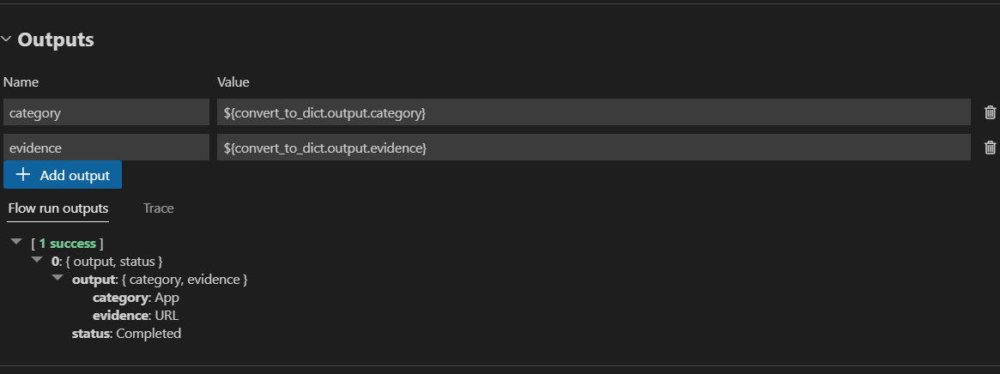

Develop standard flow#
Experimental feature
This is an experimental feature, and may change at any time. Learn more.
From this document, you can learn how to develop a standard flow by writing a flow yaml from scratch. You can find additional information about flow yaml schema in Flow YAML Schema.
Flow input data#
The flow input data is the data that you want to process in your flow.
You can add a flow input in inputs section of flow yaml.
inputs:
url:
type: string
default: https://www.microsoft.com/en-us/d/xbox-wireless-controller-stellar-shift-special-edition/94fbjc7h0h6h
When unfolding Inputs section in the authoring page, you can set and view your flow inputs, including input schema (name and type), and the input value.

For Web Classification sample as shown the screenshot above, the flow input is an url of string type. For more input types in a python tool, please refer to Input types.
Develop the flow using different tools#
In one flow, you can consume different kinds of tools. We now support built-in tool like LLM, Python and Prompt and third-party tool like Serp API, Vector Search, etc.
Add tool as your need#
You can add a tool node in nodes section of flow yaml. For example, yaml below shows how to add a Python tool node in the flow.
nodes:
- name: fetch_text_content_from_url
type: python
source:
type: code
path: fetch_text_content_from_url.py
inputs:
url: ${inputs.url}
By selecting the tool card on the very top, you’ll add a new tool node to flow.

Edit tool#
You can edit the tool by simply opening the source file and making edits. For example, we provide a simple Python tool code below.
from promptflow import tool
# The inputs section will change based on the arguments of the tool function, after you save the code
# Adding type to arguments and return value will help the system show the types properly
# Please update the function name/signature per need
@tool
def my_python_tool(input1: str) -> str:
return 'hello ' + input1
We also provide an LLM tool prompt below.
Please summarize the following text in one paragraph. 100 words.
Do not add any information that is not in the text.
Text: {{text}}
Summary:
When a new tool node is added to flow, it will be appended at the bottom of flatten view with a random name by default. At the top of each tool node card, there’s a toolbar for adjusting the tool node. You can move it up or down, you can delete or rename it too. For a python tool node, you can edit the tool code by clicking the code file. For a LLM tool node, you can edit the tool prompt by clicking the prompt file and adjust input parameters like connection, api and etc. 
Create connection#
Please refer to the Create necessary connections for details.
Chain your flow - link nodes together#
Before linking nodes together, you need to define and expose an interface.
Define LLM node interface#
LLM node has only one output, the completion given by LLM provider.
As for inputs, we offer a templating strategy that can help you create parametric prompts that accept different input
values. Instead of fixed text, enclose your input name in {{}}, so it can be replaced on the fly. We use Jinja as our
templating language. For example:
Your task is to classify a given url into one of the following types:
Movie, App, Academic, Channel, Profile, PDF or None based on the text content information.
The classification will be based on the url, the webpage text content summary, or both.
Here are a few examples:
{% for ex in examples %}
URL: {{ex.url}}
Text content: {{ex.text_content}}
OUTPUT:
{"category": "{{ex.category}}", "evidence": "{{ex.evidence}}"}
{% endfor %}
For a given URL : {{url}}, and text content: {{text_content}}.
Classify above url to complete the category and indicate evidence.
OUTPUT:
Define Python node interface#
Python node might have multiple inputs and outputs. Define inputs and outputs as shown below. If you have multiple outputs, remember to make it a dictionary so that the downstream node can call each key separately. For example:
import json
from promptflow import tool
@tool
def convert_to_dict(input_str: str, input_str2: str) -> dict:
try:
print(input_str2)
return json.loads(input_str)
except Exception as e:
print("input is not valid, error: {}".format(e))
return {"category": "None", "evidence": "None"}
Link nodes together#
After the interface is defined, you can use:
${inputs.key} to link with flow input.
${upstream_node_name.output} to link with single-output upstream node.
${upstream_node_name.output.key} to link with multi-output upstream node.
Below are common scenarios for linking nodes together.
Scenario 1 - Link LLM node with flow input and single-output upstream node#
After you add a new LLM node and edit the prompt file like Define LLM node interface,
three inputs called url, examples and text_content are created in inputs section.
You can link the LLM node input with flow input by ${inputs.url}.
And you can link examples to the upstream prepare_examples node and text_content to the summarize_text_content node
by ${prepare_examples.output} and ${summarize_text_content.output}.
- name: classify_with_llm
type: llm
source:
type: code
path: classify_with_llm.jinja2
inputs:
deployment_name: text-davinci-003
suffix: ""
max_tokens: 128
temperature: 0.2
top_p: 1
echo: false
presence_penalty: 0
frequency_penalty: 0
best_of: 1
url: ${inputs.url} # Link with flow input
examples: ${prepare_examples.output} # Link LLM node with single-output upstream node
text_content: ${summarize_text_content.output} # Link LLM node with single-output upstream node
In the value drop-down, select ${inputs.url}, ${prepare_examples.output} and ${summarize_text_content.output}, then
you’ll see in the graph view that the newly created LLM node is linked to the flow input, upstream prepare_examples and summarize_text_content node.

When running the flow, the url input of the node will be replaced by flow input on the fly, and the examples and
text_content input of the node will be replaced by prepare_examples and summarize_text_content node output on the fly.
Scenario 2 - Link LLM node with multi-output upstream node#
Suppose we want to link the newly created LLM node with covert_to_dict Python node whose output is a dictionary with two keys: category and evidence.
You can link examples to the evidence output of upstream covert_to_dict node by ${convert_to_dict.output.evidence} like below:
- name: classify_with_llm
type: llm
source:
type: code
path: classify_with_llm.jinja2
inputs:
deployment_name: text-davinci-003
suffix: ""
max_tokens: 128
temperature: 0.2
top_p: 1
echo: false
presence_penalty: 0
frequency_penalty: 0
best_of: 1
text_content: ${convert_to_dict.output.evidence} # Link LLM node with multi-output upstream node
In the value drop-down, select ${convert_to_dict.output}, then manually append evidence, then you’ll see in the graph
view that the newly created LLM node is linked to the upstream convert_to_dict node.

When running the flow, the text_content input of the node will be replaced by evidence value from convert_to_dict node output dictionary on the fly.
Scenario 3 - Link Python node with upstream node/flow input#
After you add a new Python node and edit the code file like Define Python node interface],
two inputs called input_str and input_str2 are created in inputs section. The linkage is the same as LLM node,
using ${flow.input_name} to link with flow input or ${upstream_node_name.output} to link with upstream node.
- name: prepare_examples
type: python
source:
type: code
path: prepare_examples.py
inputs:
input_str: ${inputs.url} # Link Python node with flow input
input_str2: ${fetch_text_content_from_url.output} # Link Python node with single-output upstream node

When running the flow, the input_str input of the node will be replaced by flow input on the fly and the input_str2
input of the node will be replaced by fetch_text_content_from_url node output dictionary on the fly.
Set flow output#
When the flow is complicated, instead of checking outputs on each node, you can set flow output and check outputs of multiple nodes in one place. Moreover, flow output helps:
Check bulk test results in one single table.
Define evaluation interface mapping.
Set deployment response schema.
You can add flow outputs in outputs section of flow yaml . The linkage is the same as LLM node,
using ${convert_to_dict.output.category} to link category flow output with with category value of upstream node
convert_to_dict.
outputs:
category:
type: string
reference: ${convert_to_dict.output.category}
evidence:
type: string
reference: ${convert_to_dict.output.evidence}
First define flow output schema, then select in drop-down the node whose output you want to set as flow output.
Since convert_to_dict has a dictionary output with two keys: category and evidence, you need to manually append
category and evidence to each. Then run flow, after a while, you can check flow output in a table.
